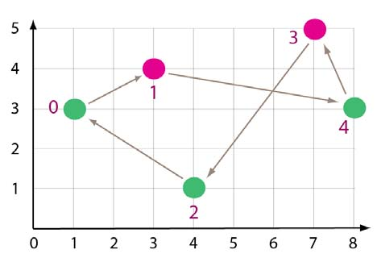

34th ICPC World Finals · Problem G
Wen Chen is the captain of a rescue boat. One of his important tasks is to visit a group of islands once a day to check if everything is all right. Captain Wen starts from the west-most island, makes a pass to the east-most island visiting some of the islands, then makes a second pass from the east-most island back to the first one visiting the remaining islands. In each pass Captain Wen moves steadily east (in the first pass) or west (in the second pass), but moves as far north or south as he needs to reach the islands. The only complication is that there are two special islands where Wen gets fuel for his boat, so he must visit them in separate passes. Figure 7 shows the two special islands in pink (1 and 3) and one possible path Captain Wen could take.

Calculate the length of the shortest path to visit all the islands in two passes when each island’s location and the identification of the two special islands are given.
The input consists of multiple test cases. The data for each case begins with a line containing 3 integers n (4 ≤ n ≤ 100), b1, and b2 (0 < b1, b2 < n-1 and b1 ≠ b2), where n is the number of islands (numbered 0 to n-1) and b1 and b2 are the two special islands. Following this, there are n lines containing the integer x- and y-coordinates of each island (0 ≤ x, y ≤ 2000), starting with island 0. No two islands have the same x-coordinate and they are in order from west-most to east-most (that is, minimum x-coordinate to maximum x-coordinate).
Input for the last case is followed by a line containing 3 zeroes.
For each case, display two lines. The first line contains the case number and the length of the shortest tour Captain Wen can take to visit all the islands, rounded and displayed to the nearest hundredth. The second line contains a space-separated list of the islands in the order that they should be visited, starting with island 0 and 1, and ending with island 0. Each test case will have a unique solution. Follow the format in the sample output.
5 1 3 1 3 3 4 4 1 7 5 8 3 5 3 2 0 10 3 14 4 7 7 10 8 12 0 0 0
Case 1: 18.18 0 1 4 3 2 0 Case 2: 24.30 0 1 3 4 2 0